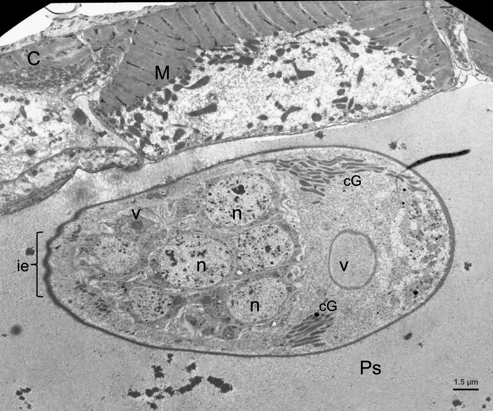

Fotomicrografía de la ultraestructura del pseudocele (Ps) de un nematodo con un celomocito suspendido, con una forma oval y las invaginaciones endocíticas (ie) de la membrana con varios procesos vacuolares (v) electrolúcidos y electrodensos de diferentes tamaños. También se observan varios núcleos en el citoplasma y varios más ramificados en los extremos cercanos a la membrana. Sin embargo, no hay varios cuerpos de Golgi (cG) electrodensos fusionados. El celomocito se aprecia cercano a la musculatura (M) rica en mitocondrias electrodensas distribuidas focalmente por el citoplasma y en el extremo izquierdo superior, la cutícula (C). Imágenes cortesía de Martínez-Ortiz de Montellano C, Fourquaux I, Hoste H y Torres-Acosta JFJ.